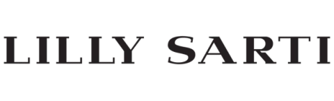
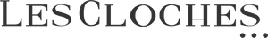

27 de agosto · 19h · Bar do Cofre · São Paulo
Nuvemshop Next convida
Você acaba dereceber a chave paraum momentoexclusivo.
Foi dentro deste cofre que decidimos abrir uma porta que normalmente fica fechada: a das Marcas Aspiracionais da Nuvemshop.
Em 27 de agosto, executivos da Nuvemshop recebem sócios, fundadores e líderes de e-commerce de marcas selecionadas que faturam milhões por ano.
Convite nominal · Dois lugares por marca · Confirmação até 25/08


Bar do Cofre · Farol Santander
Um dos endereços mais bem guardados de São Paulo, aberto para poucos.
No subsolo do Farol Santander, o antigo cofre-forte preserva duas portas circulares de 16 toneladas e mais de 2.000 cofres de aluguel. Restaurado, o espaço mantém as características que revelam sua função original.
Hoje, esse espaço recebe um jantar reservado, com menu especial e uma mesa de apenas 30 lugares.

Centro Histórico · Farol Santander
30 lugaresUm lugar que guarda parte da história de São Paulo. Uma mesa formada por marcas relevantes para o varejo brasileiro.
Marcas Aspiracionais
Os próximos movimentos de quem já é referência começam à mesa.
A curadoria reúne cerca de 15 marcas convidadas, entre clientes Next e outras operações de destaque do varejo brasileiro.
Um jantar reservado, com tempo para conversas mais próximas e novas conexões.

Algumas marcas que já escolheram a Nuvemshop.


As marcas exibidas são clientes Nuvemshop e não indicam presença confirmada no jantar.
RSVP
Este convite é para quem participa das decisões estratégicas da marca.
Confirme sua presença até 25/08. Você receberá por e-mail os detalhes do encontro e o convite de agenda.
São Paulo